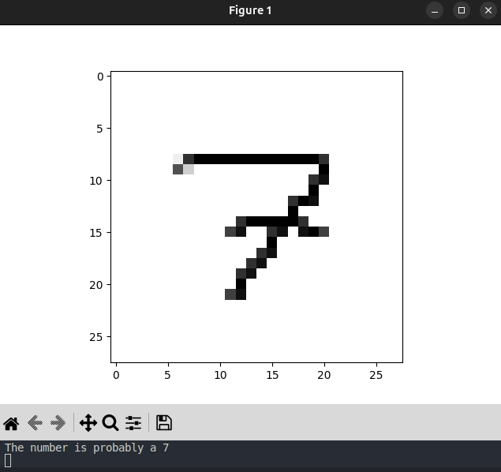

DigitEye - AI Image Recognition

Conceptual representation of DigitEye's digit recognition capabilities
Project Overview
DigitEye is an Artificial Intelligence project focused on recognizing handwritten digits. It employs a neural network built from the ground up using Python, leveraging the power of TensorFlow and Keras libraries. The primary goal was to explore fundamental concepts of deep learning and apply them to a classic machine learning problem.
The model was trained on the widely-used MNIST dataset, a large collection of handwritten digits, enabling it to learn the patterns and features necessary for accurate classification.
Key Features & Achievements
- Developed a functional Neural Network using TensorFlow and Keras
- Trained on the standard MNIST dataset for handwritten digit recognition
- Achieved a recognition accuracy of approximately 90% on test data
- Implemented flexibility allowing users to customize network parameters like the number of hidden layers and training epochs
- Provides a practical example of building, training, and evaluating a simple deep learning model
Technology Stack
Explore the Code
The complete source code, including the model definition, training script, and usage instructions, is available on GitHub. Feel free to explore, fork, or contribute!
View on GitHub Back to All Projects